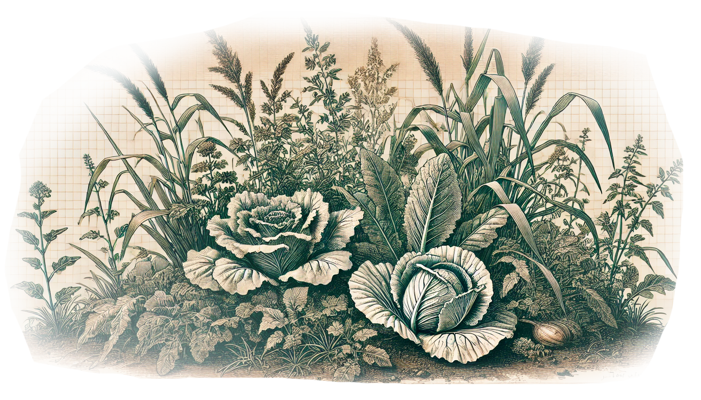
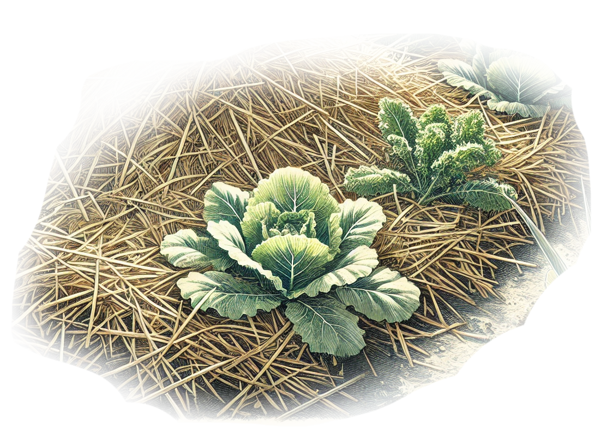
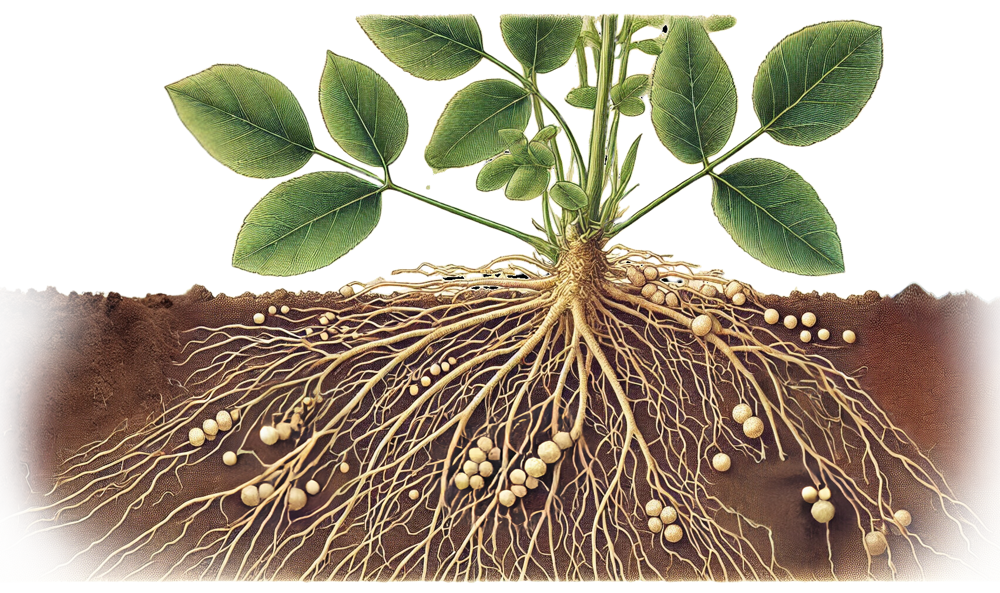
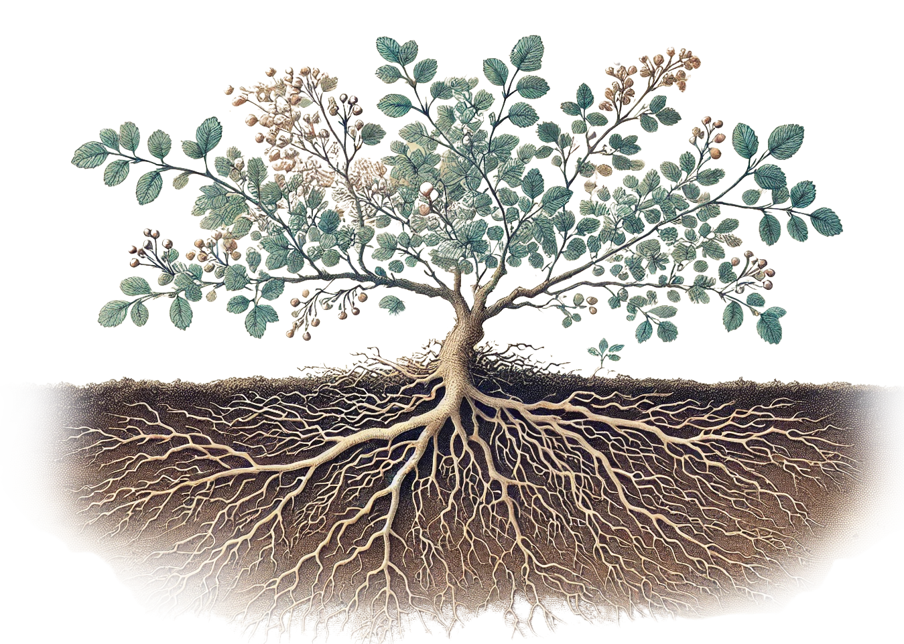

この草たち、どんな仕事をしているの？
草でつくる害虫バリア 野菜のそばに生える雑草は、うまく使えば病害虫対策になります。 害虫が野菜ではなく雑草につくことで、野菜を守る役割を果たします。 また、雑草は害虫のすみかになるだけでなく、害虫を食べる天敵の虫を引き寄せる働きもあります。
ふかふか草のおふとん～草マルチ 刈り取った雑草は、野菜を育てる畝（うね）をおおう「マルチ」として使えます。 マルチには、土の温度をちょうどよくしたり、乾燥をふせいだり、雑草を生えにくくしたりする役わりがあります。 ビニールを使うこともありますが、雑草を使えばゴミが出ません。 さらに、雑草は時間がたつと土の中の生きものに分解されて、土をふかふかにします。 やり方はとてもかんたんで、刈った雑草を畝にしくだけ。 自然にもやさしく、土も元気になる方法です！
マメ科の魔法～窒素固定 マメ科の植物の根っこには、「根粒菌」という小さな妖精が住んでいます。 この妖精たちは、空気中にたっぷりある「窒素」を植物が食べられる「アンモニア」という形に変える魔法を使います。 このしくみを「窒素固定」と呼びます。 空気の78％は窒素なのですが、植物たちはそのままでは使えません。 マメ科の雑草も、根粒菌とともに、土を豊かにしているのです。
雑草の根がつくる縦動線 雑草の根は硬い土に突き刺さり、土をほぐす役割を果たします。 また、深く伸びた根が水や栄養の通り道となり、土の中まで行きわたる環境を整えます。
